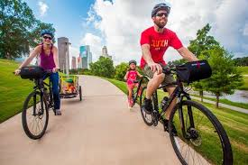
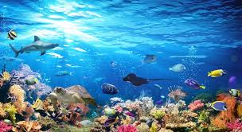

Skole og barnehage
De Grønne vil sørge for at skolen er forankret i et helhetlig menneskesyn og kan ivareta mangfoldet av elever. Fravær, frafall og lite læring kan bareforebygges ved å gjøre skolen bedre for flere. Vi vil fremme dybelæring oglæringsglede. Læring må skje i varierte omgivelser og ta utgangspunkt i barn ogunges iboende evne og vilje til å lære og utvikle seg. Det vil vi legge tilrette for gjennom en friere og mer verdibasert skolepolitikk.
Elever må få en virkelighetsnær opplæring som gir mulighet til å læryrkesutøvelsen skikkelig. Da er dybdelæring, spesialisering og mulighet tiå prøve seg avgjørende. Mestring av faget sitt er det beste utgangspunktefor tverrfaglighet, kreativitet, innovasjon og omstilling både undeopplæring og i arbeidslivet. Dette krever nært samarbeid med næringsliv ofagmiljøer og fleksibilitet i organiseringen av fag- og yrkesopplæringen.
Helse og omsorg

De Grønne vil ha et sterkt offentlig helse – og omsorgstilbud som sikrer allelik rett til god behandling. Et innslag av ideelle og private aktører kan pånoen områder gi større mangfold og kvalitet og være et positivt supplement. DeGrønne mener det er viktig å motvirke en todeling av helsevesenet der personermed god økonomi kan kjøpe seg til bedre behandling.
God psykisk helse er avgjørende for å oppleve god livskvalitet og for kunne håndtere ulike livssituasjoner på en tilfredsstillende måte. Det mtas tak i de grunnleggende drivkreftene bak denne utviklingen, som økendforbruks- og prestasjonsjag. De Grønne vil derfor ha et særlig løft fopsykisk helse i neste stortingsperiode hvor det legges vekt på bådforebygging og behandling.
De Grønne vil føre en kunnskapsbasert og human ruspolitikk. Vi går inn for å avkriminalisering av rusbruk, noe som vil spare både brukere og samfunnet for belastninger. Vi ønsker også å utrede hvorvidt regulert omsetning av lettere rusmidler kan bidra til skadereduksjon på individ- og samfunnsnivå, med utgangspunkt i erfaringer fra andre land.
Byer

Flere norske byer har lenge slitt med helsefarlig luft, noe som førte til atNorge i 2015 ble dømt av EFTA-domstolen for ulovlig høy luftforurensning. Særliger det barn, eldre og syke mennesker som risikerer helseplager, sykdom eller fortidlig død som følge av luftforurensning. Målet vårt er at luftkvaliteten ibyene alltid skal være i tråd med Helsemyndighetenes anbefalinger.
I Oslo har De Grønne ledet an i kampen mot luftforurensning. I 201var lufta forførste gang under den lovpålagte grensa foluftforurensning. Bedringen skyldes ihovedsak at biltrafikken går ne at stadig flere går, sykler og reiser kollektivt og at vi ser erekordvekst i bruk av elbil. Det samme ønsker vi å gjøre i allebyesom sliter med helsefarlig luftforurensning.
De Grønne mener at barnas trygghet må prioriteres over bilen. Det burde være en selvfølge at det er trygt å sende barn til skolen uten at de må kjøres. Derfor mener vi at man må systematisk jobbe med å redusere fartsgrenser, få på plass fartshumper og opphøyde gangfelt, bygge ut sykkelveier, og gjennomføre trafikkreduserende tiltak ved skoleveier. I tillegg vil vi etablere bilfrie hjertesoner rundt byskoler i hele landet.
Levende hav

De siste 40 årene har antallet fisk, sjøfugl, hval og andre dyr i havet blitthalvert. For hvert tiår som går, blir havene fattigere og tommere. Dette skyldesblant annet klimaendringer og havforsuring, overfiske, oppdrettsnæringen,oljeutvinning og dumping av gruveavfall. På samme måte som vi verner skog, må viverne om naturverdiene i Nordsjøen, Norskehavet, Barentshavet og langs helekysten. De Grønne ønsker en marin verneplan, slik at vi kan ta vare påoppvekstområder for fisk, korallrev, sjøfugl og tareskog.
Oppdrettsindustrien er Norges nest største eksportnæring og samtidig en ade største miljøutfordringene langs kysten. For at oppdrettsnæringen skabli en bærekraftig industri, må det settes miljøkrav som hindrer forurensinav omgivelsene, rømming og utslipp av lus. Vi vil derfor ha lukkede anleginnen 2025. De Grønne sier også nei til sjødeponi av gruveavfall og stansdeponering av gruveavfall i Førdefjorden og Repparfjorden.